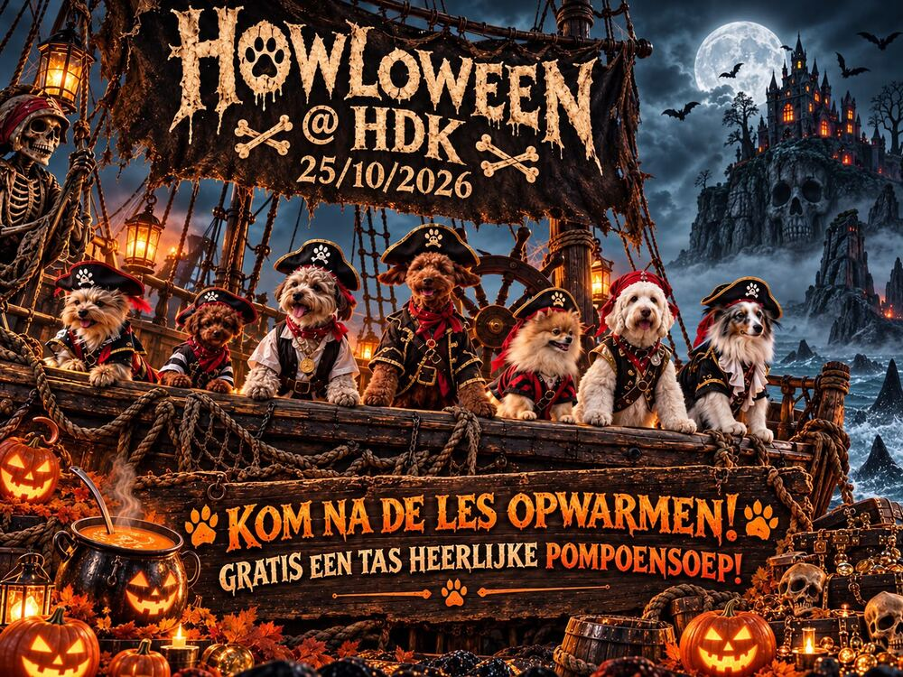
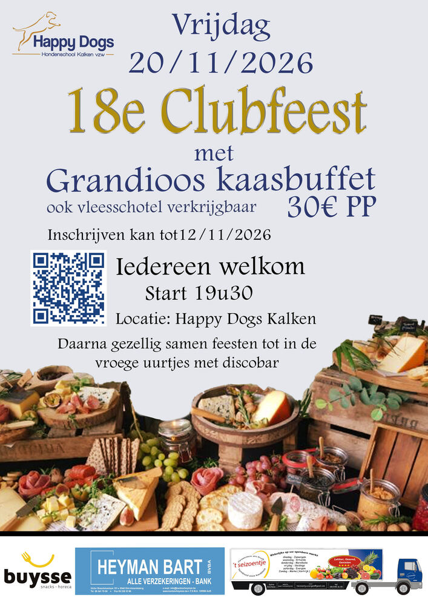
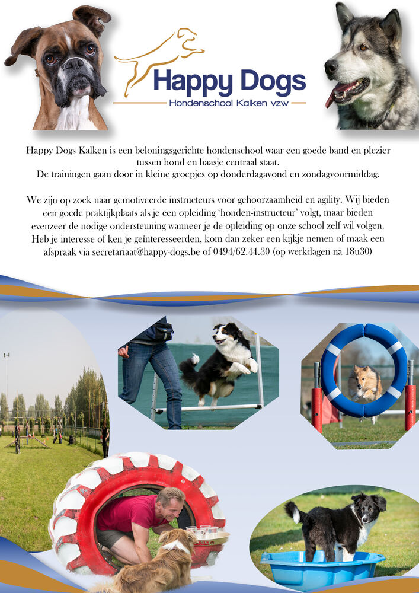
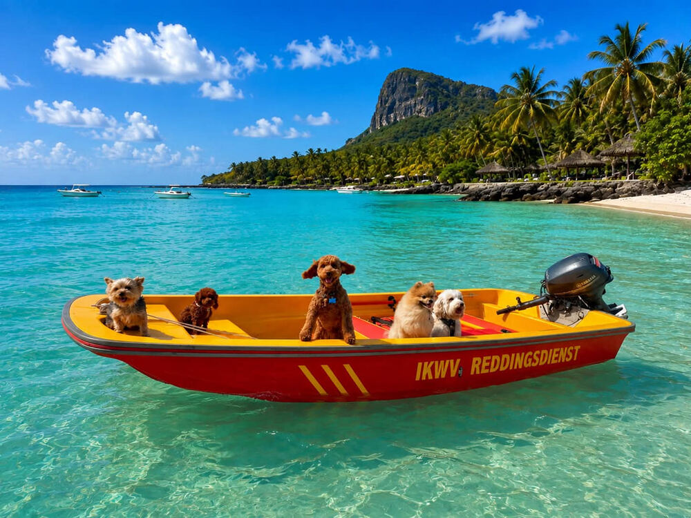

Welkom bij Happy Dogs Kalken
Hondenschool voor gehoorzaamheid en agility – plezier voor hond en baas
Beste hondenliefhebber,
Van harte welkom op de website van de hondenschool Happy Dogs Kalken.
Het feit dat je dit leest, betekent dat je ofwel van plan bent om een hond aan te schaffen of dat je reeds een hond hebt. Dit betekent dat je de komende 10 jaar een grote verantwoordelijkheid draagt naar de hond en de maatschappij.
Onze visie vind je bij Over ons/Visie.
Veel snuffelplezier op onze website!
Happy Dogs Kalken vzw
Mededelingen
Iedereen welkom op zondag 25 oktober 2026: Halloween.

De hondenschool zal gesloten zijn op donderdag 29 oktober 2026 wegens werkzaamheden aan de Provinciebaan.
Op zondag 1 november 2026 is het Allerheiligen en zal de hondenschool eveneens gesloten zijn. De kennismakingslessen en het overgangsexamen zullen verplaatst worden naar zondag 8 november 2026.
Op 20 november 2026 gaat ons 18de clubfeest door in de kantine van de hondenschool. Een kaasbuffet of vleesschotel staan op het menu en daarna kunnen we onze beentjes strekken tot in de vroege uurtjes.
Inschrijven kan vanaf nu tot 12 november 2026 via de QR-code of via de link https://forms.gle/6nT7Ukabo95CQrdd7

Zoektocht naar gemotiveerde instructeurs voor gehoorzaamheid en agility

Oktober 2026

Noortje, Loesje, Fien, Kamiel en Marcel